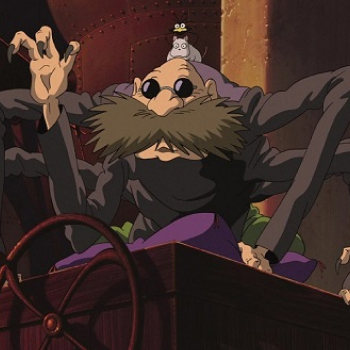

CHARACTER
오기노 치히로 / 센
극장 애니메이션 센과 치히로의 행방불명의 주인공이다. 작중 진행에 따라 "센"이라는 가명을 쓰게 된다. 미야자키 하야오 감독 작품의 여성 주인공들의 공통적 특징 중 하나인 순수하고 자상한 성격을 가지고 있다. 작품 내에서의 역할은 대략 '탐욕과 대비되는 순수'로, 이후에는 특유의 순수함에 용기마저 더해져 자신의 문제를 해결하며 주인공다운 면모를 보이게 된다. 작품 자체가 '신의 세상에 떨어진 평범한 아이의 성장기'라고 해도 과언이 아니다.
하쿠
극장 애니메이션 센과 치히로의 행방불명의 남주인공. 곤경에 빠진 치히로를 도와주는 수수께끼의 인물. 외관상 12~13살로 추정되지만 실제 나이는 알려지지 않았다. 원래 하쿠는 백룡의 모습을 한 강의 신으로서 본명은 니기하야미 코하쿠누시다. 강이 메워지고 아파트가 들어서서 갈 곳이 없어지자 마법의 힘을 얻기 위해 유바바의 제자가 되고 유바바에게 이름을 빼앗겨 그녀의 앞잡이가 되었던 것이다. 또한, 하쿠는 과거에 치히로가 코하쿠 강에서 놀다가 물살에 휩쓸렸을 때 치히로를 구해준 적이 있었다. 치히로에게는 두 번의 생명의 은인이었고, 이때의 인연으로 본인 역시 치히로에게 구원받은 것이다.

유바바
작품의 배경이 되는 신들이 이용하는 목욕탕 '油屋'의 경영자로, 이등신의 할머니다. 그녀는 마녀이기 때문에 여러가지 마법을 사용할 수 있다. 사람이나 요괴 등 여러 존재의 이름을 빼앗아서 지배하는데, 이름을 빼앗긴 사람의 본명에 대한 기억까지 없앤다. 굉장히 괴팍하고 음험한 데다, 잔혹하며 무자비한 성격에 돈을 엄청나게 밝히는 물질만능주의자이다.

Other Character
- 
- 가마 할아범
- 유바바가 운영하는 온천장의 보일러실에서 일하는 할아버지 요괴.

- 가오나시
- 이름의 뜻은 얼굴 없음이며, 그 뜻 그대로 얼굴이 있어야 할 부분에 가면만 있고 입은 몸통에 따로 있다.

- 린
- 온천에서 일하는 젊은 종업원인 여우 요괴 소녀.

- 제니바
- 유바바의 쌍둥이 언니로, 역시 쌍둥이라서 유바바와 매우 비슷하게 생겼다.

- 보우
- 유바바의 아들이자 제니바의 조카. 엄청난 신체 스펙을 자랑한다.
-
- 오물신
- 치히로가 욕탕에서 맞이한 첫 손님. 말 그대로 전신이 오물로 뒤덮힌 신이다. 사실은 고급 강의 신이다.
-
- 숯 검댕이들
- 온천장에서 가마 할아범을 도와 석탄을 나르는 생물들. 별사탕이 먹이인 듯 린이 보일러실로 밥을 가져다 줄 때 얘들한테는 별사탕을 뿌려준다.
-
- 치히로의 부모
- 신들을 위해 유령들이 만들어 놓은 음식들을 먹고 돼지가 된다.